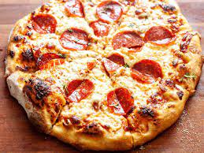

Pizza

DESCRIPTION
This stuff real good! Bread and chease and stuff!
WOW WEE!
INGREDIANTS
- 16 ounces pizza dough, store-bought or homemade
- 1/2 cup pizza sauce (see below)
- 18 to 20 slices pepperoni
- 12 ounces mozzarella cheese, grated
- 1/2 teaspoon ground black pepper
- 1 teaspoon fresh oregano, optional
- Flour for rolling and shaping dough
STEPS
- Preheat the oven: Preheat oven to 500°F. If you are using a pizza stone,
preheat it in the oven for at least 20 minutes so it is nice and hot as well.
- Make sauce: If you are using my sauce recipe, stir together the ingredients.
The sauce recipe makes just enough for one large pizza.
You can easily double it if you are making more than one pizza.
- Roll out the dough: Roll out dough on a lightly floured surface. If it's hard
to roll, let it rest for 5 minutes so it can come to room temperature. For a large
pizza, I like to roll my dough into about a 14-inch diameter circle.
- Roll out the dough: Roll out dough on a lightly floured surface. If it's hard
to roll, let it rest for 5 minutes so it can come to room temperature. For a large
pizza, I like to roll my dough into about a 14-inch diameter circle.
- Cook the pizza:
If you're using a pizza stone, carefully slide pizza into the center of
the preheated pizza stone. Cook for 6 minutes, then rotate the pizza
halfway so it cooks evenly. Cook for another 6-8 minutes, or until the
crust is golden brown and charred in spots.
- Slice and serve:
Use pizza peel to slide pizza out onto a cutting board. Let the
pizza rest for a minute and slice into pieces. Season with fresh
oregano (optional). Serve while warm with a side salad.
- Make the honey butter (optional): Stir together the softened
butter and honey, then serve alongside the pizza for crust dipping.
BACK